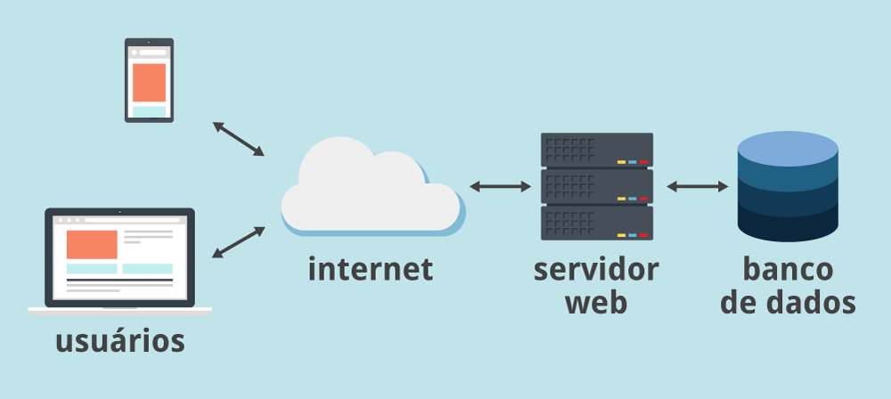

O banco de dados é a organização e armazenagem de informações sobre um domínio específico. De forma mais simples, é o agrupamento de dados que tratam do mesmo assunto, e que precisam ser armazenados para segurança ou conferência futura.
É comum que empresas tenham diversas informações que precisam ser organizadas e disponibilizadas dentro do negócio para que sejam consultadas posteriormente pela equipe e pela gerência.
Por isso, é interessante ter um sistema de gerenciamento de banco de dados, SGBD, para conseguir manipular as informações e tornar a rotina da empresa muito mais simples.
Hoje, existem diversos tipos de SGBDs, e cada um é adequado para uma necessidade dos clientes. São os mais comuns: Oracle, DB2, MySQL, SQL Server, PostgreSQL e outros.
Se a sua empresa tem um site em WordPress ou em alguma outra plataforma, o banco de dados é fundamental para manter o bom funcionamento e a praticidade no dia a dia do negócio.
Se você está se perguntando porque o WordPress precisa de um banco de dados, a resposta é simples: para permitir armazenar todas as informações contidas no seu site e blog em WordPress de forma eficiente, permitindo que o usuário tenha a melhor experiência possível e consiga realmente navegar e encontrar todas as informações que precisa durante a sua busca.
Esses dados corretamente organizados irão ajudar a melhorar não só a experiência desses visitantes, como também a rotina da sua área de TI. Afinal, seus profissionais conseguirão acessar, armazenar e restaurar os dados sempre que necessário com o uso de uma boa ferramenta de gestão de banco de dados.
O banco de dados pode ser considerada uma das partes mais importantes do WordPress, pois ele será responsável por manter o seu site e blog rodando sem problemas, com backups diários que previnem a perda de informações.
O investimento em um bom banco de dados pode trazer diversos benefícios para a empresa, impactando positivamente não só na produtividade da equipe, mas também no alinhamento entre os times e nos resultados alcançados mensalmente.
Quando falamos sobre a melhora no relacionamento na empresa, estamos falando sobre a forma com que os mais diversos setores se comunicam.
Um banco de dados eficiente permitirá que várias áreas distintas se comuniquem e mantenham claras suas expectativas, metas e objetivos através da gestão de dados.
Os setores conseguirão trabalhar, entendendo exatamente quais são as informações reais sobre a empresa e o que precisa ser alcançado. Essa transparência pode ser uma forma de alinhar as expectativas dos diversos times, além de melhorar a produtividade dessas equipes, evitando conflitos e aumentando o potencial de bons resultados.
A empresa que possui um bom banco de dados também tem a tranquilidade e a transparência necessárias para a tomada de decisões feita de forma muito mais eficiente.
Muitas empresas ainda decidem questões importantes através de achismos. Com o banco de dados, você terá informações valiosas para se basear e avaliar o cenário como um todo, de forma clara e transparente.
Logo também poderá identificar os principais gargalos e melhorias que precisam ser realizadas dentro da sua empresa.
